Each poster goes to Instagram and to your TikTok drafts with the caption shown.
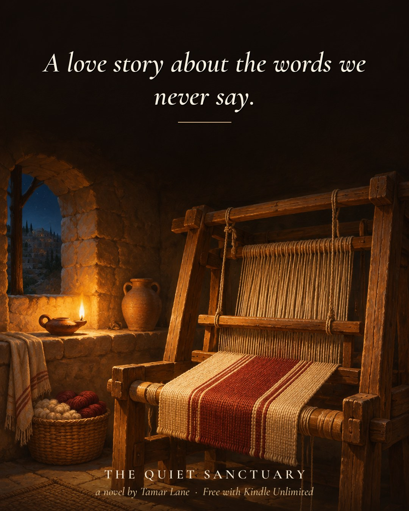
A love story about the words we never say. Atarah weaves by lamplight in a stone house in Beth-Tsur. Her husband, Caleb, is the kindest man on three hills. And for ten years, something between them has gone unspoken. The Quiet Sanctuary — Book I of The Novels of Beth-Tsur. Kindle $3.99, or free with Kindle Unlimited. Search “The Quiet Sanctuary Tamar Lane” on Amazon. #booktok #christianfiction #historicalromance #cleanromance #kindleunlimited #bookstagram #marriageromance
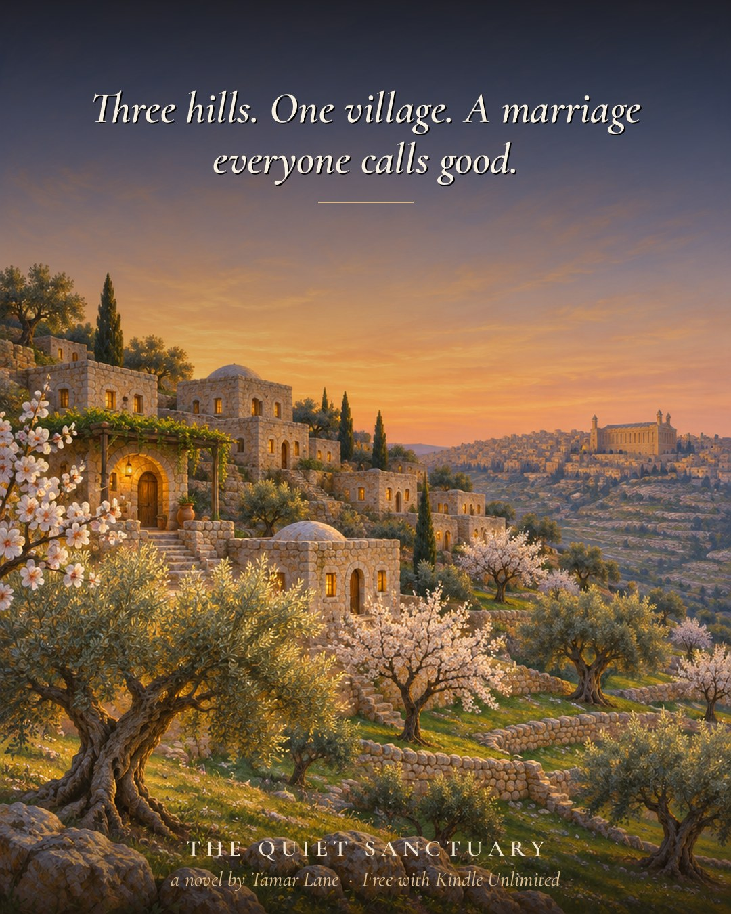
Three hills. One village. A marriage everyone calls good. Everyone in Beth-Tsur agrees that Atarah and Caleb have a good marriage, and everyone is right. That is exactly what makes the silence so hard to name. A quiet, closed-door historical romance set in a hill village near Hebron, long ago. Kindle $3.99, or free with Kindle Unlimited. Search “The Quiet Sanctuary Tamar Lane” on Amazon. #biblicalfiction #historicalfiction #christianbooktok #cleanromance #kindleunlimited #bookstagram #booktok
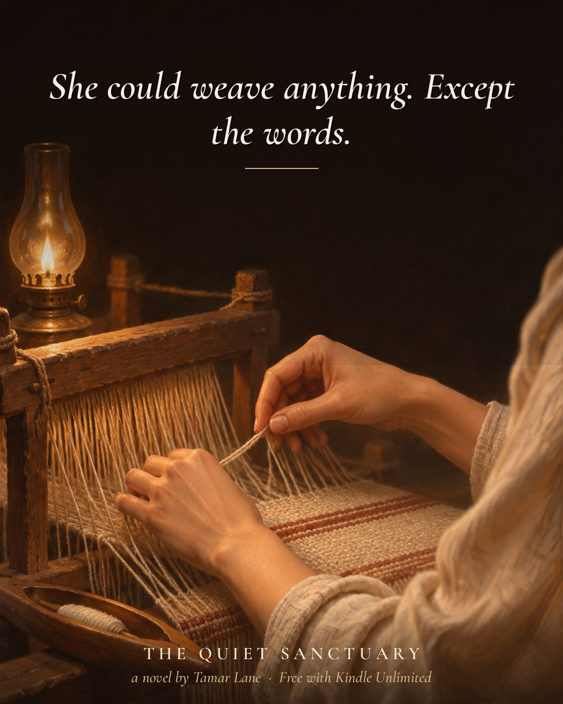
She could weave anything. Except the words. Atarah is the most gifted weaver in Beth-Tsur. But she was raised to believe that questions were immodest, and that a gentle spirit endures and does not ask. The Quiet Sanctuary is about the first true word, and what it costs to say it. Kindle $3.99, or free with Kindle Unlimited. Search “The Quiet Sanctuary Tamar Lane” on Amazon. #christianfiction #womensfiction #historicalromance #booktok #kindleunlimited #bookstagram #faithfiction
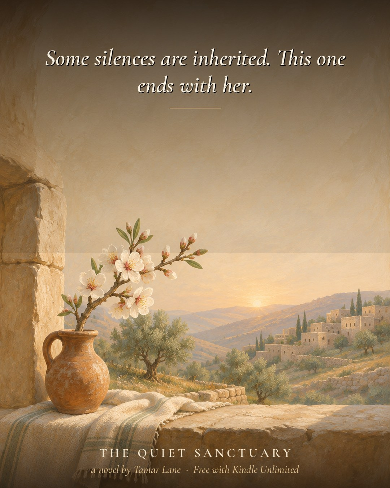
Some silences are inherited. This one ends with her. In The Quiet Sanctuary, a silence passes from mother to daughter for generations, until one woman decides it stops here. A hopeful story of marriage, faith and generational healing. Kindle $3.99, or free with Kindle Unlimited. Search “The Quiet Sanctuary Tamar Lane” on Amazon. #womensfiction #mothersanddaughters #christianfiction #christianbooktok #kindleunlimited #bookstagram #booktok
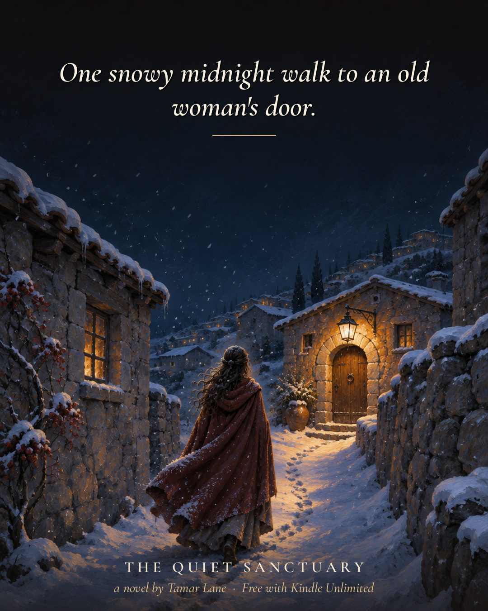
One snowy midnight walk to an old woman's door. It doesn't look like a turning point. But some of the most important conversations in a life happen by lamplight, in the cold, when no one else is awake. The Quiet Sanctuary, Book I of The Novels of Beth-Tsur. Kindle $3.99, or free with Kindle Unlimited. Search “The Quiet Sanctuary Tamar Lane” on Amazon. #historicalfiction #biblicalfiction #christianfiction #booktok #kindleunlimited #bookstagram #historicalromance
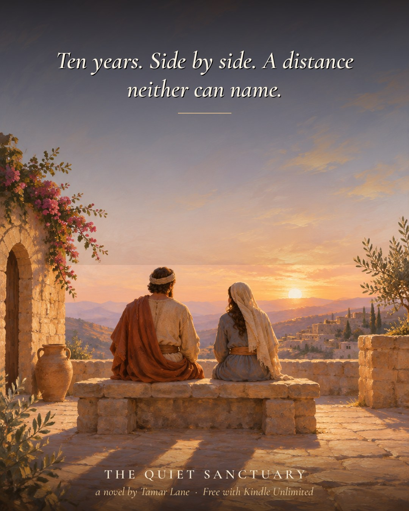
Ten years. Side by side. A distance neither can name. Atarah and Caleb love each other. They are good to each other. And each of them is quietly convinced the flaw is their own. A married-couple romance for readers who want to see what comes after the wedding. Kindle $3.99, or free with Kindle Unlimited. Search “The Quiet Sanctuary Tamar Lane” on Amazon. #marriageromance #marriedromance #christianromance #cleanromance #kindleunlimited #booktok #bookstagram
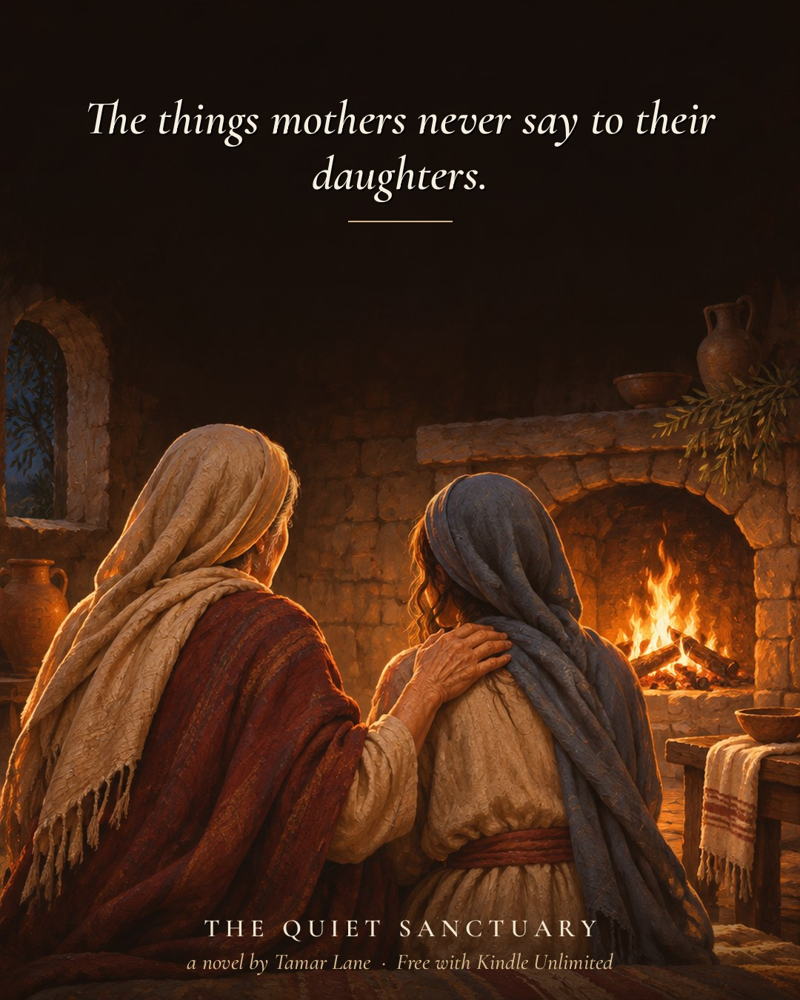
The things mothers never say to their daughters. The Quiet Sanctuary is a story about what gets handed down without a word, and the women who decide the silence ends with them. Tender, faith-filled and closed-door. Kindle $3.99, or free with Kindle Unlimited. Search “The Quiet Sanctuary Tamar Lane” on Amazon. #mothersanddaughters #womensfiction #christianfiction #christianbooktok #kindleunlimited #bookstagram #booktok
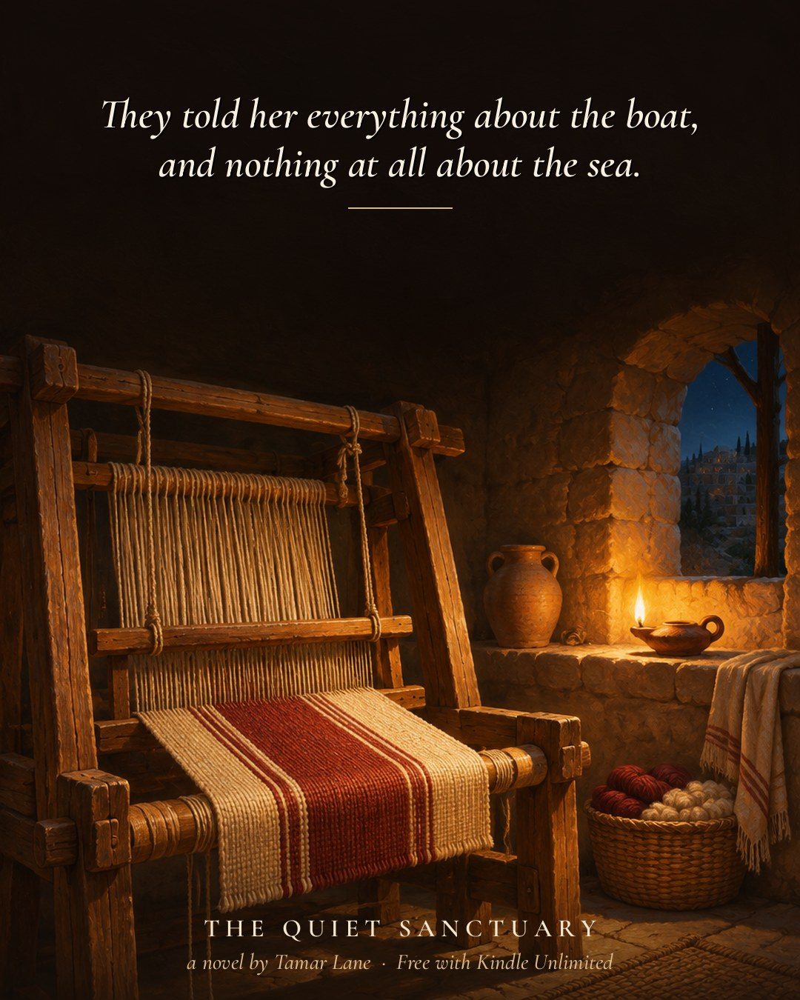
They told her everything about the boat, and nothing at all about the sea. Atarah was taught everything a good wife should know, except the things that mattered most. Ten years into her marriage, she is still looking for the words. The Quiet Sanctuary — a quiet, hopeful love story. Kindle $3.99, or free with Kindle Unlimited. Search “The Quiet Sanctuary Tamar Lane” on Amazon. #booktok #christianfiction #historicalromance #cleanromance #kindleunlimited #bookstagram #bookquotes
Come to Beth-Tsur. A hill village near Hebron, long ago. A loom, a lamp, a household, and two people who love each other more than they know how to say. The Quiet Sanctuary is told at the pace of village life, with close attention to the heart. Kindle $3.99, or free with Kindle Unlimited. Search “The Quiet Sanctuary Tamar Lane” on Amazon. #biblicalfiction #ancientisrael #historicalfiction #christianfiction #kindleunlimited #bookstagram #booktok
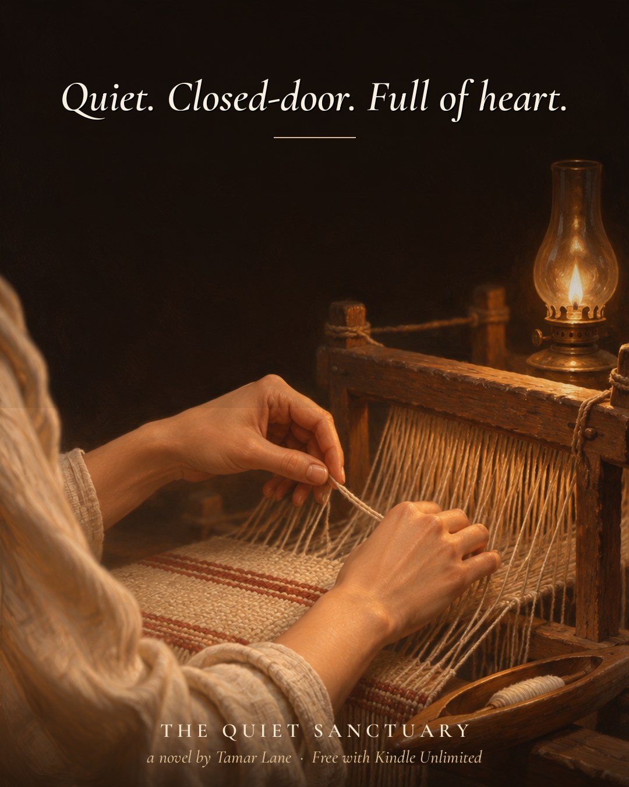
Quiet. Closed-door. Full of heart. The Quiet Sanctuary is about intimacy within marriage, handled with honesty, reverence and care. There are no explicit scenes. For readers who want a clean romance with real emotional weight. Kindle $3.99, or free with Kindle Unlimited. Search “The Quiet Sanctuary Tamar Lane” on Amazon. #cleanromance #closeddoorromance #christianromance #cleanreads #kindleunlimited #booktok #bookstagram
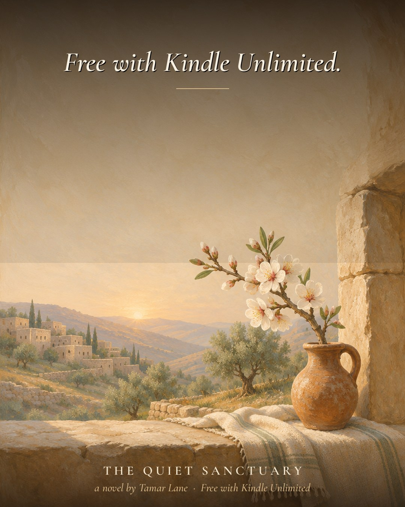
Free with Kindle Unlimited. If you're a KU reader, The Quiet Sanctuary costs you nothing to try: a quiet, closed-door historical romance about a married couple in ancient Judea, and the silence they finally break. Kindle $3.99, or free with Kindle Unlimited. Search “The Quiet Sanctuary Tamar Lane” on Amazon. #kindleunlimited #kureads #kuromance #cleanromance #christianfiction #booktok #bookstagram
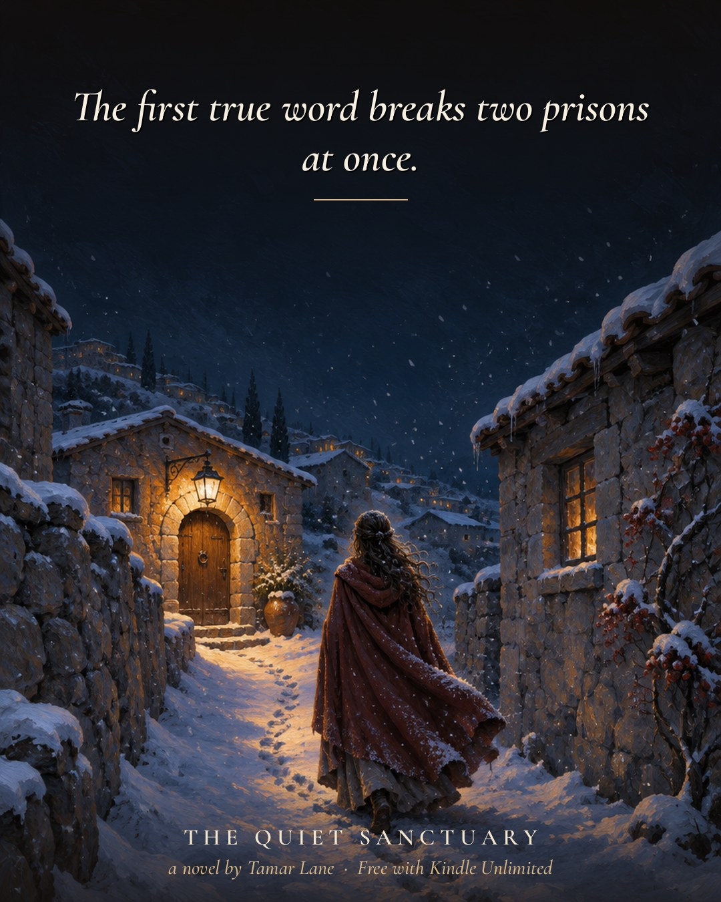
The first true word breaks two prisons at once. For ten years, Atarah and Caleb loved each other through a wall. The Quiet Sanctuary is the story of how it comes down. A tender, hopeful, closed-door love story. Kindle $3.99, or free with Kindle Unlimited. Search “The Quiet Sanctuary Tamar Lane” on Amazon. #historicalromance #christianromance #cleanromance #marriageromance #kindleunlimited #booktok #bookstagram
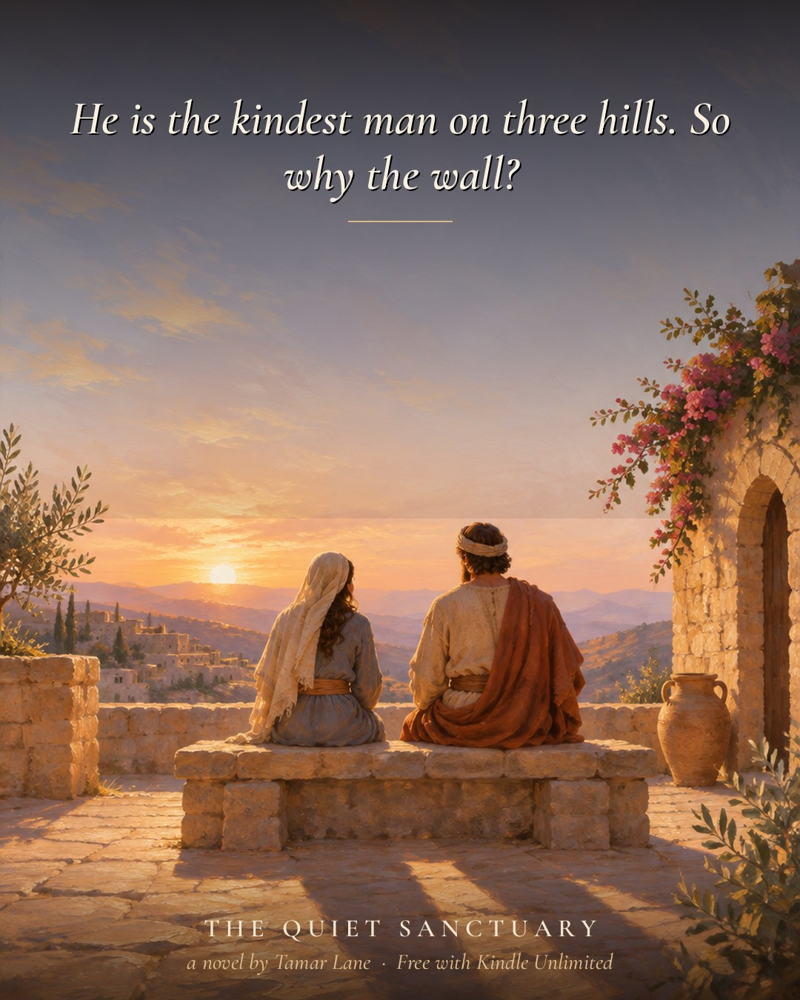
He is the kindest man on three hills. So why the wall? Caleb is gentle, patient and good. Atarah loves him. And still there is a distance between them that neither can explain. If you love a gentle hero, meet him in The Quiet Sanctuary. Kindle $3.99, or free with Kindle Unlimited. Search “The Quiet Sanctuary Tamar Lane” on Amazon. #gentlehero #bookboyfriend #christianromance #historicalromance #kindleunlimited #booktok #bookstagram
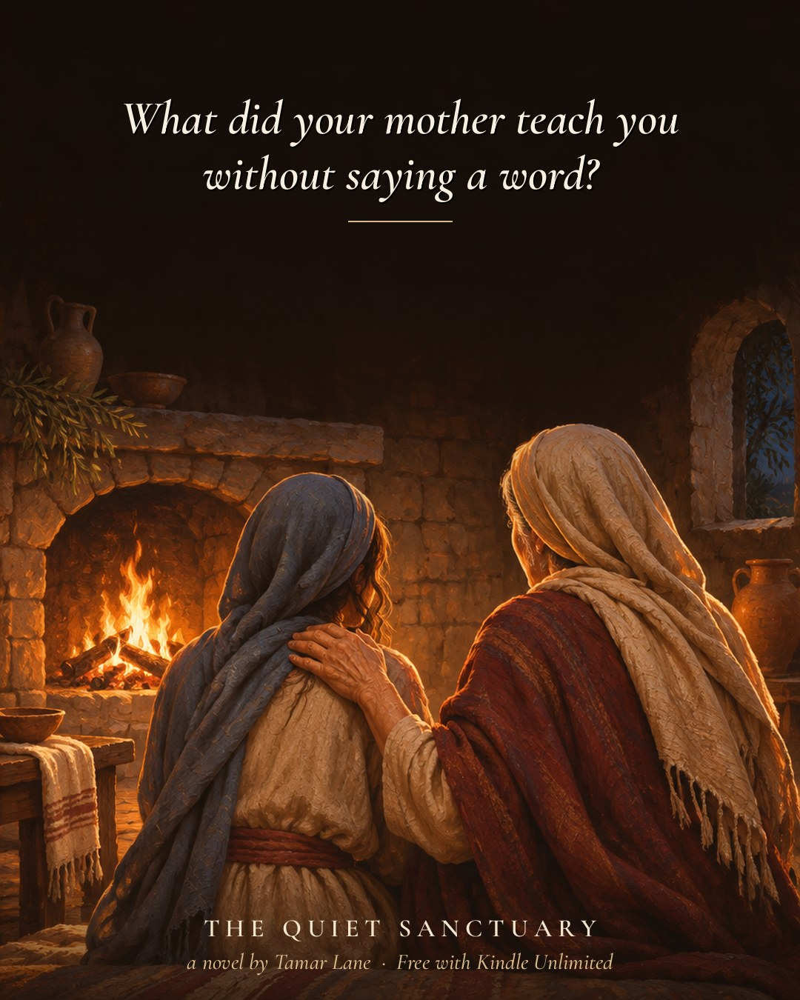
What did your mother teach you without saying a word? In The Quiet Sanctuary, a silence is handed down from mother to daughter for generations. Tell us in the comments, or just sit with the question for a minute. Book I of The Novels of Beth-Tsur. Kindle $3.99, or free with Kindle Unlimited. Search “The Quiet Sanctuary Tamar Lane” on Amazon. #readerquestion #mothersanddaughters #womensfiction #christianbooktok #kindleunlimited #bookstagram #booktok